Design Methods and Processes

When solving a problem, I followed a set of principles that allows me
to discover key values and needs of who I am designing for,
the criteria for the solution and how to go about
efficient and effective implementation.
Telling a Story
A captivating story is the best way to send a message.
Through a mix of the written and spoken word, image and animation the
very best solution to a problem shines with it’s fullest potential.
Ideation

Racking your brain for ideas can be a tedious task.
When I need to think of a solution, the wackiest ideas mingle with the sensible.
This thought cocktail then finds itself becoming both innovative and grounded by
taking the best parts of a lot of avenues.